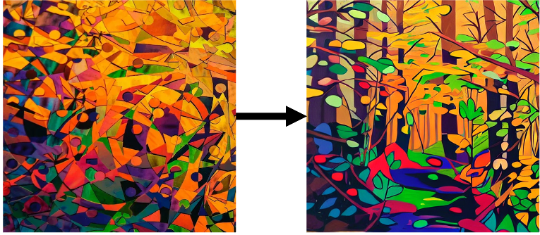
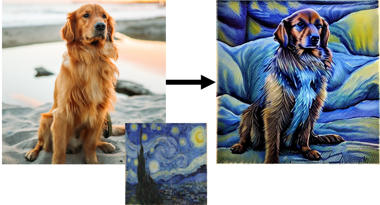
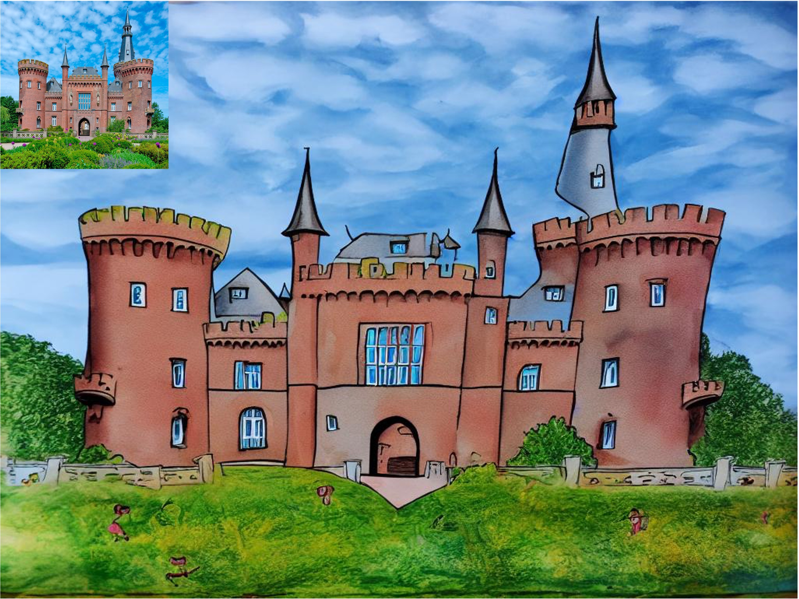
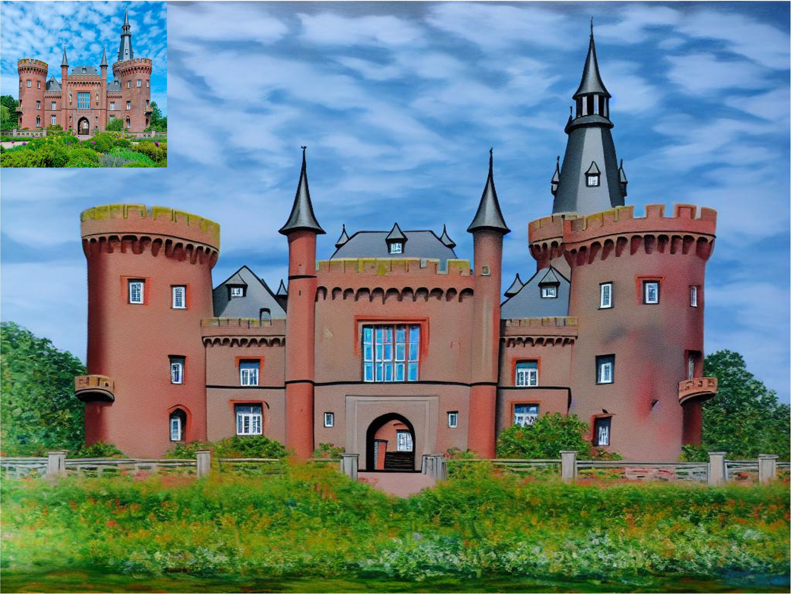
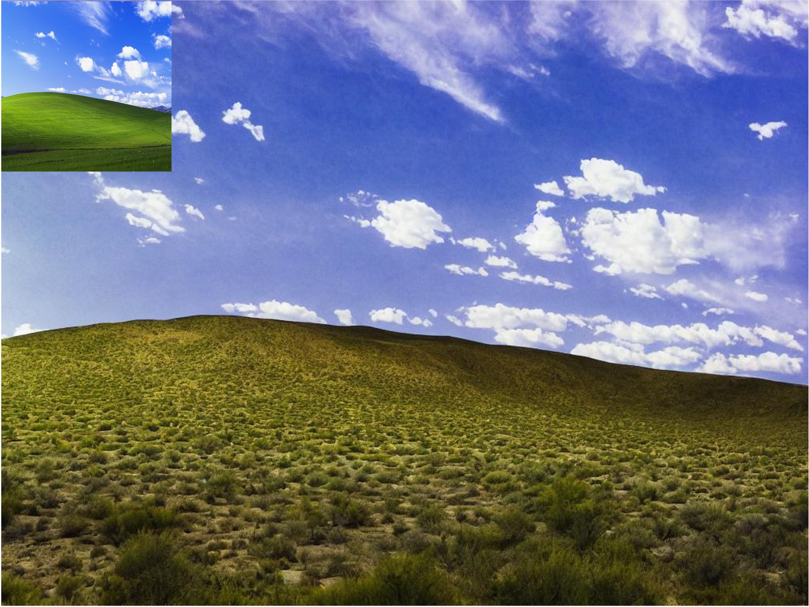
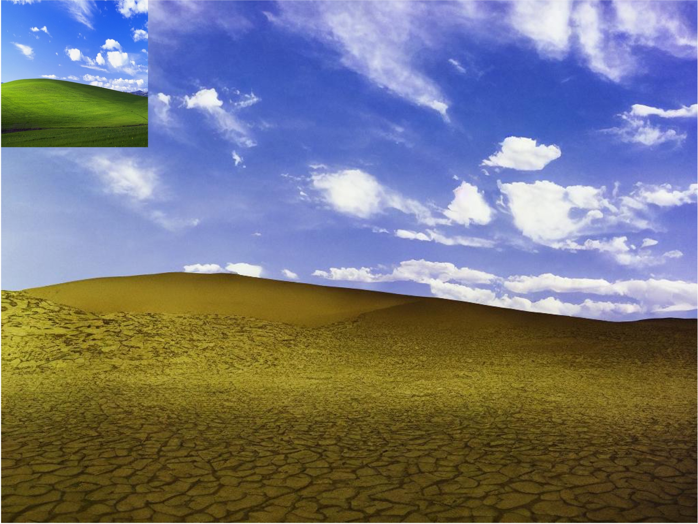
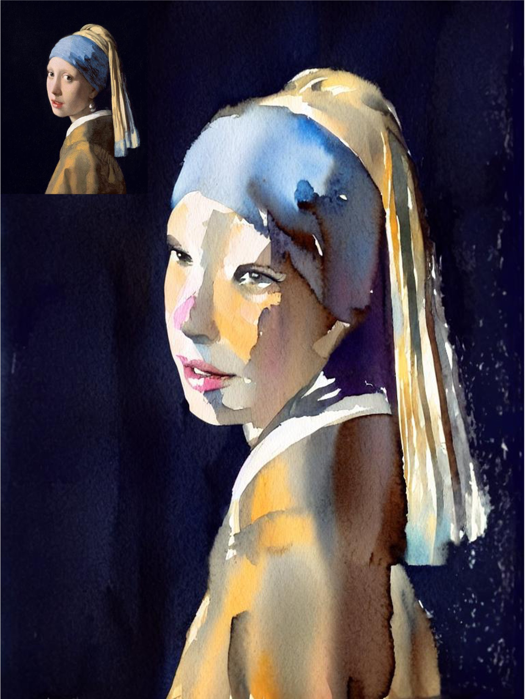

Experiments
Editing on single source image from various domains.
We employ our method on various images and edit them with two target prompts at 512 × 512 resolution. We show the wide range of edits our approach can be used, including but not limited to style transfer, content add-on, posture change, breed change, etc.

Arbitrary resolution editing.
Our method achieves higher-resolution image editing without artifacts like duplicates, even on ones that change the height-width ratio drastically.

In-the-wild human face manipulation.
We conduct various editing on human face photos, locally or globally. The models are trained and edited at a resolution of 512 × 512.

More applications.
We show how our approach can be applied to various tasks in image editing, such as content removal (a), style generation (b), and style transfer (c).
(a) Content Removal
(b) Style Generation
(c) Style Transfer
More results.
A children’s painting of a castle. The generation resolution is set to H = 768 and W = 1024. We use K = 400 and v = 0.7 in this sample.
A painting of a castle in the style of Claude Monet. The output resolution is set to H = 768 and W = 1024. We use K = 400 and v = 0.65 in this example.
A photo of a lake with many sailboats. The output resolution is set to H = 768 and W = 1024. We use K = 400 and v = 0.7 in this example.
A desert. The output resolution is set to H = 768 and W = 1024. We use K = 500 and v = 0.8 in this example.
A desert. The output resolution is set to H = 768 and W = 1024. We use K = 500 and v = 0.8 in this example.
A watercolor painting of a girl. The output resolution is set to H = 1024 and W = 768. We use K = 400 and v = 0.6 in this example.
